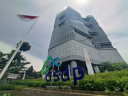
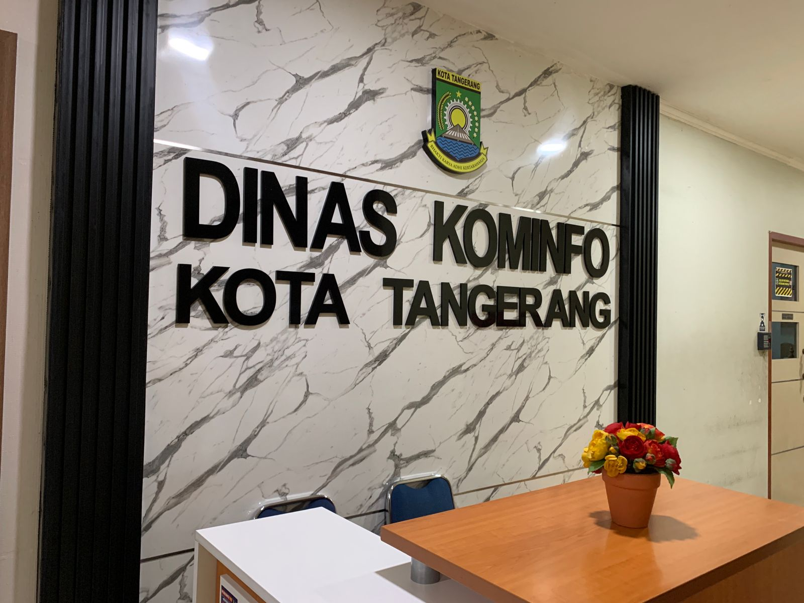

Irwan Saputra
Pariaman, Indonesia | 081261949982 | irwansptra021@gmail.com | LinkedIn | Blog
Tentang Saya
Saya adalah individu yang penuh semangat dan berdedikasi tinggi dalam bidang Jaringan, dengan pengalaman praktis yang mendalam di lapangan. Saya memiliki komitmen kuat terhadap pengembangan diri, baik secara profesional maupun personal, serta semangat untuk terus belajar dan berkembang.
Saya berkomitmen untuk selalu memberikan hasil terbaik, bekerja sama secara efektif, dan menyelesaikan tantangan teknis dengan pendekatan yang efisien dan terstruktur.
Galeri Proyek



Pendidikan
| Tahun | Institusi | Jurusan |
|---|---|---|
| 2025 - Sekarang | Universitas Siber Asia | Informatika |
| 2019 - 2022 | SMKN 3 Pariaman | Teknik Komputer dan Jaringan |
Sertifikasi
| Nama Sertifikat | Penyedia | Masa Berlaku |
|---|---|---|
| MTCNA | MikroTik | 2023 – 2026 |
| NSE 1 – 3 | Fortinet | 2023 – 2026 |
Pengalaman Kerja
PT Medianusa Permana | Kota Batam | Maret 2024 – Sekarang
- Network Operation Center | Juni 2024 – Sekarang
- Monitoring jaringan backbone menggunakan tools: PRTG, Cacti, Zabbix, The Dude
- Aktivasi interkoneksi pelanggan baru
- Troubleshooting gangguan interkoneksi
- Maintenance perangkat distribusi
- Penyusunan laporan harian & bulanan perangkat distribusi
- IT Helpdesk | Maret 2024 – Mei 2024
- Menangani keluhan pelanggan dan melakukan tiketing
- Penyusunan laporan gangguan
BestPath Network | Kota Tangerang | Agustus 2023 – Januari 2024
- Network Engineer
- Instalasi dan troubleshooting perangkat Cisco & H3C
- Menyusun dokumen RAB dan SOW
- Maintenance jaringan internal
- Project handled bersama tim:
- Instalasi perangkat di PT ASDP Indonesia Ferry
- Asesmen jaringan di KOMINFO Banten
- Instalasi server & kabel di NTMC DKI Jakarta
- Instalasi jaringan saat Event KTT ASEAN Jakarta
Keahlian
- Routing & Switching
- Monitoring & Troubleshooting
- Networking & Protocol
- Wireless Access Point
- Teamwork
- Communication